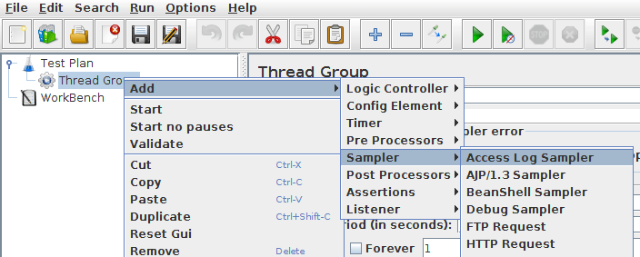
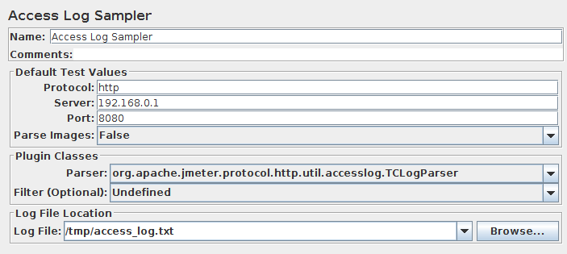
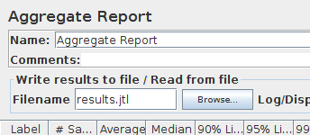

This is a short tutorial on JMeter's access log sampler. The purpose of the Access Log Sampler
is to provide an easy way to simulate production traffic. There are several benefits to using access logs.
- Rather than guess what users are doing, the test plan is using real traffic data
- As the traffic pattern changes, the access log provides a record of individual changes and general shifts in usage
- Access logs contain a lot of useful data, which may provide some insight
- Access logs can be minded to determine different types of users
- Access logs can capture detailed session information
The down side of using access logs for test plans is you have to configure the webserver to output the request
information. This may not be appropriate where security is an issue. For example, if the webserver dumps the post
data from each request to the access logs, users login and password would be stored in plain text. Here are some
general cases where access logs might be inappropriate.
- Security sensitive applications where the data is encrypted
- The application does not allow fine grain control of which request parameters are written to the access logs
- The application needs correlation between requests
- The webserver cannot be configured to append the post data to the access log
- The webserver is hosting multiple applications, but doesn't provide a way to log the requests of one application to a separate file
To take advantage of access logs, the first thing is the webserver needs to be configured to use extended
log format. Links for configuring the popular containers are provided below.
In some cases, it may be desirable to write custom logging, so that sensitive information is not written
to the access logs. This article does not cover the techniques for writing custom logging.
|
28.1 Step-by-Step
|
- Start JMeter
- Select Test Plan
- Right click
- Select Thread Group
- Right click

Add Access Log Sampler |
- Right click on Thread Group
- Select the Access Log Sampler
- Enter the IP address or hostname in Server
- Enter the port in Port
- If you want to download the images, set Parse images to true.
- Select a file for Log File Location

Filled in Access Log Sampler |
- Select Aggregate Report
- Enter results.jtl for filename

Aggregate Report with filename |
At this point, the test plan is ready. Start the test with
Ctrl + R
or from the menu
.
|
|